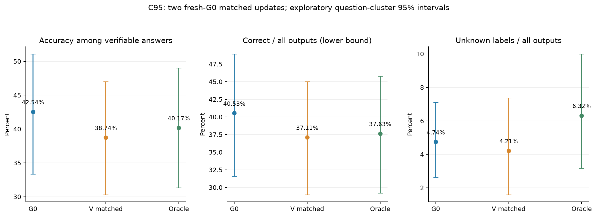
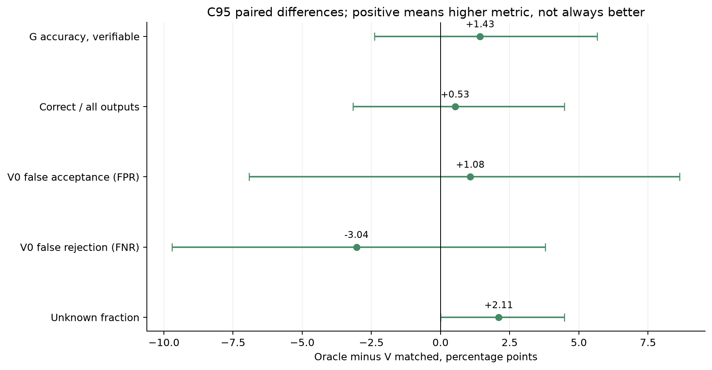
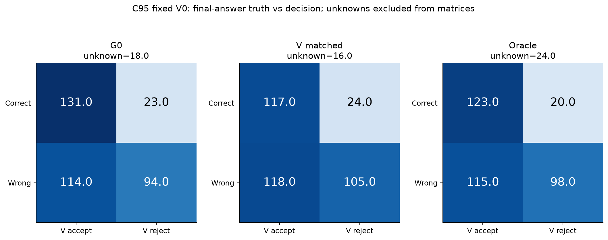
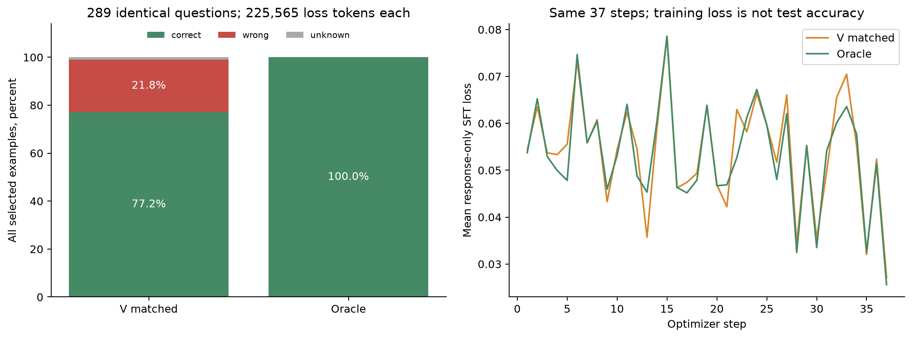
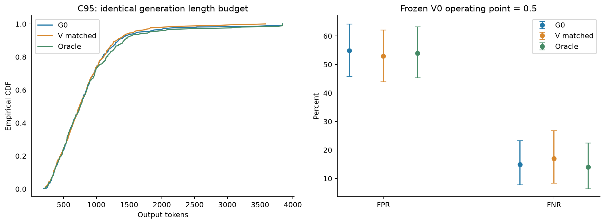

匹配Oracle监督对照
两组G0起步、共同289题、225565监督token、37步；T封存。
中文报告 · Excel · 图册
01_generator_development_metrics

02_matched_oracle_effects

03_fixed_V0_confusion

04_training_match_and_loss

05_output_length_and_V0_errors
